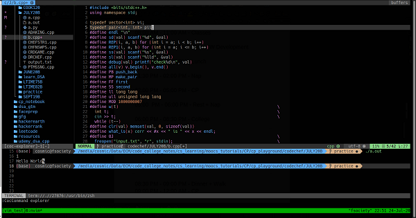

Anmol Tomer
Software Engineer
Dedicated to writing high quality and maintainable code quickly using best tools for the job. Applying my programming skills to solve real world problems in an efficient manner is what excites me.
I am a curious learner, always focused on maximizing my learning experiences.
Featured Projects
View selected projects below. More information can be found on my GitHub page.
VimLikeVSCode
Created a neovim guide and vim script file with guide to getting started with neovim quickly.
View projectWork Experience
As a developer I have been part of multiple data science, web development, computer vision teams at various organizations. Work comprised primarily around technologies such as Python, MongoDB, JavaScript, TensorFlow, OpenCV.
Data Science Intern
Nokia Networks and Solutions
May 2019 - June 2019
Intern at Nokia Solutions and Networks in Machine Learning and Data Analytics Team.
Computer Vision Developer
Technocrats Robotics
Aug 2019 - Feb 2020
Worked on custom object detection for Mars Rover Prototype for Indian Rover Challenge 2020 competition.
Core Committee Member & Educator
VIThink
Aug 2019 - March 2021
Was part of VIThink a student run research and development group. Responsibilities included organizing free workshops, events featuring industry speakers in the domain of data science and AI and guiding students to get started with data science and research.
Competitive Programming Lead
Google Developer Student Club
September 2020 - April 2021
Was competitive programming lead and core committee member. Responsibilities included, Promoting Competitive Programming and Data Science among students, Conducting workshops and events that focus on data structures and algorithmic problem solving, as well as creating various resources for learners of various levels.
Education
Vellore Institute of Technology - Chennai
B.Tech, Electronics and Computer Science Engineering
July 2018 - May 2022